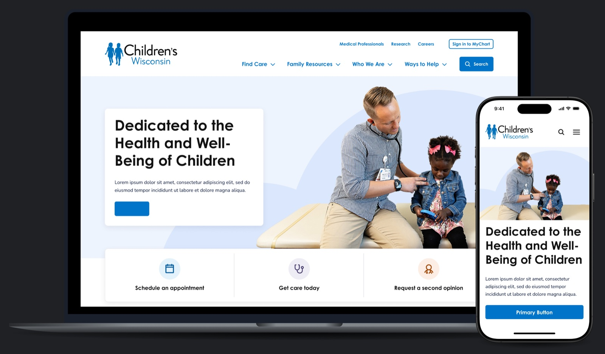
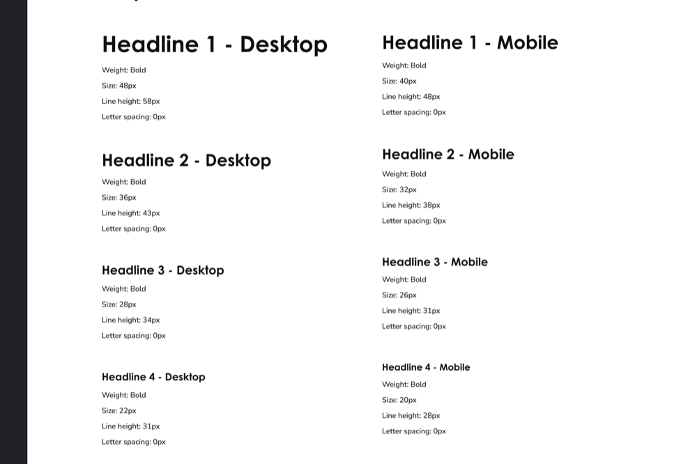
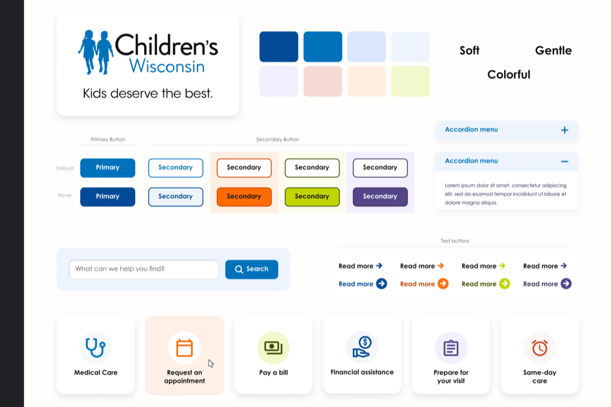
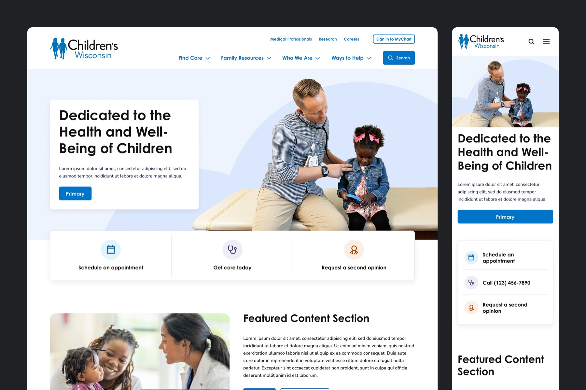
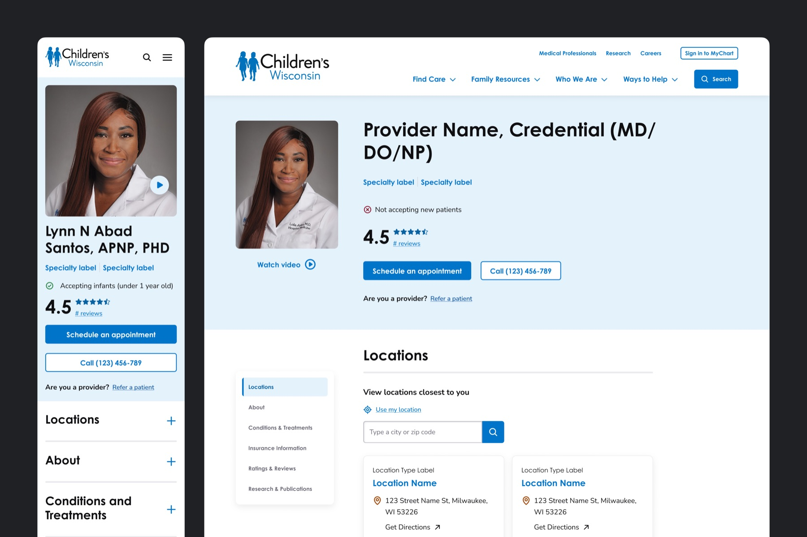
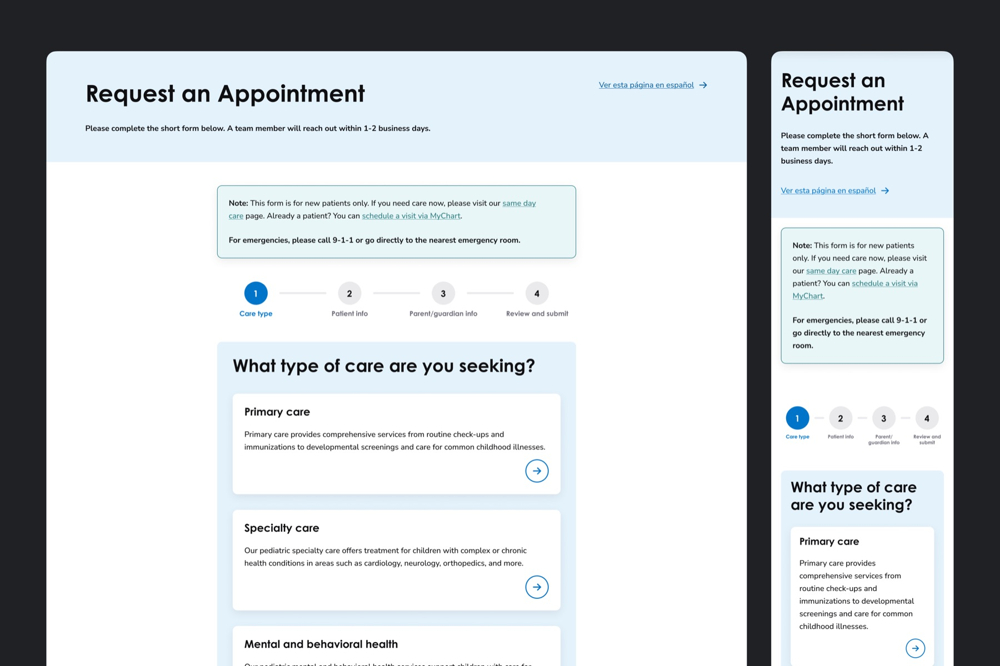

Transforming a Children's Hospital Website Through Research and Strategy
Contributed to the end-to-end redesign of the Children's Wisconsin enterprise website, informed by research and digital strategy.

Overview
Children's Wisconsin partnered with our team to redesign and replatform childrenswi.org on a modern headless architecture. The initiative aimed to improve the digital experience for families, and support goals around patient acquisition and access to care.
As a Digital Product Designer, I helped translate user research into a scalable information architecture, design system, and experience strategy.
The Challenge
The existing website was organized around the hospital's internal structure rather than how caregivers search for care. Critical tasks like finding a provider, locating a clinic, or scheduling an appointment often required navigating through layers of complexity.
Through stakeholder interviews and a survey of 148 caregivers, we uncovered several key insights:
- 42% identified provider availability as their biggest barrier to care.
- Finding the right doctor and understanding where to go were among the most difficult tasks.
- Caregivers followed different paths when researching symptoms versus finding treatment.
These findings became the foundation for the redesign.
Research Insights
Our research identified four primary caregiver archetypes:
- Well Family – Seeking routine pediatric care and wellness information.
- Emerging Diagnosis – Beginning to navigate a new health concern.
- Parent Expert – Managing ongoing or complex conditions.
- Underserved – Facing barriers such as language, transportation, or limited healthcare access.
One insight significantly influenced the site's structure: caregivers use educational resources and search engines to understand symptoms, but turn to provider directories, patient portals, and healthcare websites when they're ready to seek care. Treating these as separate journeys helped us create a more intuitive experience.
My Approach
Information Architecture
I helped redesign the site's information architecture around caregiver goals rather than departmental structures.
High-priority actions like Find a Doctor, Find a Location, and Schedule an Appointment were moved into the primary navigation, making them easier to access and reducing friction in the path to care.
Design System
To support the new architecture, I contributed to a scalable design system with reusable components and templates for provider profiles, specialty pages, condition content, and location pages.
Visual Design
Early concepts explored a range of visual directions, from playful to clinical. The final design balanced warmth and approachability with trust-building elements caregivers valued most, including provider credentials, ratings, and insurance information.


Outcome
View live siteThe project concluded with a validated information architecture, comprehensive design system, and final designs ready for Sitecore implementation.
Every major design decision was grounded in caregiver research, creating an experience better aligned with how families discover, evaluate, and access pediatric care.
Key Contributions
- Translated user research into UX strategy
- Redesigned information architecture and navigation
- Contributed to a scalable design system
- Designed templates for key content types
- Collaborated with stakeholders to align user and business goals


